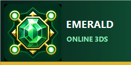

Checking installation...
The previous launcher or emulator session ended unexpectedly.
Your save was not modified by the launcher. Retry Play, or export privacy-safe diagnostics if the problem repeats.
Settings
Keyboard Controls
- Arrow keys
- Move / Circle Pad
- A
- Confirm / GBA A
- S
- Back / GBA B
- M
- Start
- N
- Select
- Z
- Toggle online / 3DS X
- X
- Cycle dashboard / 3DS Y
- Q / W
- L / R
- F10 / F11
- Screen layout / Fullscreen
Click the emulated lower screen for touch controls. Gamepads can be configured in Azahar.
Data & recovery
Backups stay on this computer and never include emerald.gba. They can include your save and private online identity, so never upload or share them.
Deletion removes this launcher's ROM, save, identity, settings, logs, and downloaded updates. It does not delete backup files saved elsewhere and cannot guarantee forensic erasure on SSDs.
Launcher updates
Updates are checked only when you ask. Downloads must match the published SHA-256 checksum and have a valid Windows Authenticode signature.